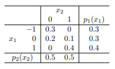

3 Matrix Algebra
Learning Outcomes
After finishing this note, students should be able to:
- Represent the data using vectors and matrices.
- Conduct basic matrix calculations such as addition, multiplication, and transposing.
- Verify whether a matrix is symmetric, orthogonal, positive definite, or positive semidefinite.
- Find the eigenvalues and corresponding eigenvectors of a \(2\times 2\), \(3 \times 3\), and simple matrix.
- Conduct a spectral decomposition and/or a singular-value decomposition of a given matrix.
- Find the mean vector and variance-covariance matrix for a given multivariate distribution.
- Find the sample mean vector and sample variance-covariance matrix of a data set using R.
3.1 Vectors
An array \(\mathbf{x}\) of \(n\) real numbers \(x_1, x_2, \cdots, x_n\) is called a vector and is written as a column vector \[ \mathbf{x}= \left[ \begin{array}{c} x_1\\ x_2\\ \vdots\\ x_n \end{array} \right] \mbox{ or } \quad \mathbf{x}^{T}=[x_1, x_2, \cdots, x_n] \] where the “\(T\)” denotes the operation of transposing a column to a row vector.
Take the bird data for example, each bird has five measurements: \(X_1\)=total length, \(X_2\)=alar length, \(X_3\)=length of beak and head, \(X_4\)=length of humerus, \(X_5\)=length of keel and sternum. As a result, the randomness is presented in a vector of five random variables. The measurements for the first bird is \(\mathbf{x_1}=[156, 245, 31.6, 18.5, 20.5]^{T}\), for the second bird \(\mathbf{x_2}=[154, 240, 30.4, 17.9, 19.6]^{T}\). In general, the measurements for the \(i\)th bird is \(\mathbf{x_i}=[x_{i1}, x_{i2}, \cdots, x_{ip}]^{T}\), where \(p\) is the number of explanatory variables, \(p=5\) in the bird example.
3.1.1 Some Basic Operations on Vectors
- For any constant \(c\), \[ c\mathbf{x}= \left[ \begin{array}{c} cx_1\\ cx_2\\ \vdots\\ cx_n \end{array} \right] \]
- The length of the vector \(\mathbf{x}=[x_1, x_2, \cdots, x_n]^{T}\) is \[ L_{\mathbf{x}}=||\mathbf{x}||=\sqrt {\mathbf{x}^T\mathbf{x}}=\sqrt{[x_1, x_2, \cdots, x_n]\left[ \begin{array}{c} x_1\\ x_2\\ \vdots\\ x_n \end{array} \right]}=\sqrt{x_1^2+x_2^2+\cdots+x_n^2}. \]
- For any two vectors of the same number of elements, the sum of the two vectors is \[ \mathbf{x}+\mathbf{y}= \left[ \begin{array}{c} x_1\\ x_2\\ \vdots\\ x_n \end{array} \right]+\left[ \begin{array}{c} y_1\\ y_2\\ \vdots\\ y_n \end{array} \right]=\left[ \begin{array}{c} x_1+y_1\\ x_2+y_2\\ \vdots\\ x_n+y_n \end{array} \right] \]
- For any two vectors with the same number of elements, the \({\it inner \: product}\) of the two vectors is \[ \mathbf{x}^{T}\mathbf{y}=[x_1, x_2, \cdots, x_n]\left[ \begin{array}{c} y_1\\ y_2\\ \vdots\\ y_n \end{array} \right]=x_1y_1+x_2y_2+\cdots+x_ny_n=\sum x_iy_i. \] A special case of the inner product is \(L_{\mathbf{x}}=||\mathbf{x}||=\sqrt{\mathbf{x}^{T}\mathbf{x}}=\sqrt{\sum x_i^2}\).
- Let \(\theta\) be the angle of two vectors with the same of elements, we have \[ \cos{\theta}=\frac{\mathbf{x}^{T}\mathbf{y}}{L_{\mathbf{x}}L_{\mathbf{y}}}=\frac{\mathbf{x}^{T}\mathbf{y}}{||\mathbf{x}||.||\mathbf{y}||}=\frac{\sum x_iy_i}{\sqrt{(\sum x_i^2)(\sum y_i^2)}}. \] This can be proved by the law of cosines: \(c^2=a^2+b^2-2ab\cos \theta\), where \(a, b,c\) are the sides of a triangle and \(\theta\) is the angle between sides \(a\) and \(b\).
Two vectors are perpendicular if and only if \(\mathbf{x}^{T}\mathbf{y}=0\).
Could you find any connection between \(\cos{\theta}\) and the correlation coefficient between the two variables \(r\)?
- A set of vectors \(\mathbf{x_1}, \mathbf{x_2}, \cdots, \mathbf{x_k}\) of the same dimension is said to be linearly dependent if there exist constants \(c_1, c_2, \cdots, c_k\), not all zero, such that \[ c_1\mathbf{x_1}+c_2\mathbf{x_2}+\cdots+c_k\mathbf{x_k}=\mathbf{0}. \]
- The projection of a vector \(\mathbf{x}\) on another vector \(\mathbf{y}\) is \[ \mbox{Projection of $\mathbf{x}$ on $\mathbf{y}$}=\frac{\mathbf{x}^{T}\mathbf{y}}{\mathbf{y}^{T}\mathbf{y}}\mathbf{y}. \]
3.2 Matrices
Putting all the birds together, one bird in one row, we will obtain the data matrix \[ \mathbf{X}= \left[ \begin{array}{ccccc} x_{11} &x_{12}& x_{13}&\cdots& x_{1p}\\ x_{21} &x_{22}& x_{23}&\cdots& x_{2p}\\ \vdots&\vdots&\vdots&\vdots&\vdots\\ x_{n1} &x_{n2}& x_{n3}&\cdots& x_{np} \end{array} \right] \] which is a \(n\times p\) matrix with \(n\)= the number of individuals. In the bird example \(n=49\).
In general, an \(m\times n\) matrix is an array of numbers with \(m\) rows and \(n\) columns of the form \[ \mathbf{A}= \left[ \begin{array}{ccccc} a_{11} &a_{12}& a_{13}&\cdots& a_{1n}\\ a_{21} &a_{22}& a_{23}&\cdots& a_{2n}\\ \vdots&\vdots&\vdots&\vdots&\vdots\\ a_{m1} &a_{m2}& a_{m3}&\cdots& a_{mn} \end{array} \right] \] We use bold upper-case letters to represent matrices and bold lower-case letters to represent vectors. If \(m=n\), then the matrix is a square matrix. The transpose of the matrix is obtained by interchanging the rows and the columns, that is \[ \mathbf{A}^{T}= \left[ \begin{array}{ccccc} a_{11} &a_{21}& a_{31}&\cdots& a_{m1}\\ a_{12} &a_{22}& a_{32}&\cdots& a_{m2}\\ \vdots&\vdots&\vdots&\vdots&\vdots\\ a_{1n} &a_{2n}& a_{3n}&\cdots& a_{mn} \end{array} \right] \] which is a \(n\times m\) matrix.
Some special matrices include:
- Zero matrix: all elements are 0.
- Diagonal matrix: All the off-diagonal entries are 0 and not all of the diagonal entries are 0.
- Identity matrix \(\mathbf{I}\): all diagonal entries are 1 and all off-diagonal entries are 0.
- A matrix \(\mathbf{A}\) is \({\it symmetric}\), if \(\mathbf{A}^{T}=\mathbf{A}\).
- A matrix \(\mathbf{A}\) is \({\it orthogonal}\) if \(\mathbf{A}^{-1}=\mathbf{A}^{T}\).
3.2.1 Basic Operations on Matrix
- The trace of square matrix \(\mathbf{A}_{n\times n}\) is defined as the sum of the diagonal elements. That is \(\mbox{Trace}(\mathbf{A})=\displaystyle\sum_{i=1}^n a_{ii}\).
- For an square matrix \(\mathbf{A}_{n\times n}\), if there exists another square matrix \(\mathbf{B}_{n\times n}\), such that \(\mathbf{A}\mathbf{B}=\mathbf{B}\mathbf{A}=\mathbf{I}_{n\times n}\), then \(\mathbf{B}\) is called the \({\it inverse}\) of \(\mathbf{A}\). The inverse of a matrix does not necessarily exist, the condition that the inverse of \(\mathbf{A}_{n\times n}\) exists is that the \(n\) columns of \(\mathbf{A}\) are linearly independent.
- For any constant \(c\), we have \[ c\mathbf{A}= \left[ \begin{array}{ccccc} ca_{11} &ca_{12}& ca_{13}&\cdots& ca_{1n}\\ ca_{21} &ca_{22}& ca_{23}&\cdots& ca_{2n}\\ \vdots&\vdots&\vdots&\vdots&\vdots\\ ca_{m1} &ca_{m2}& ca_{m3}&\cdots& ca_{mn} \end{array} \right] \]
- For two matrices \(\mathbf{A}_{m\times n}\) and \(\mathbf{B}_{m\times n}\), their sum is defined as \[ \mathbf{A}+\mathbf{B}= \left[ \begin{array}{ccccc} a_{11} +b_{11}&a_{12}+b_{12}& a_{13}+b_{13}&\cdots& a_{1n}+b_{1n}\\ a_{21} +b_{21}&a_{22}+b_{22}& a_{23}+b_{23}&\cdots& a_{2n}+b_{2n}\\ \vdots&\vdots&\vdots&\vdots&\vdots\\ a_{m1}+b_{m1} &a_{m2}+b_{m2}& a_{m3}+b_{m3}&\cdots& a_{mn}+b_{mn} \end{array} \right] \]
- For two matrices \(\mathbf{A}_{m\times k}\) and \(\mathbf{B}_{k\times n}\), their product is a \(m \times n\) matrix whose entry on the \(i\)th row and \(j\)th column is defined as \([\mathbf{A}\mathbf{B}]_{i,j}=\sum_{t=1}^k a_{it}b_{tj}\). In general, \(\mathbf{A}\mathbf{B}\ne \mathbf{B}\mathbf{A}\)
- \(\mathbf{A}+\mathbf{B}=\mathbf{B}+\mathbf{A}\)
- \((\mathbf{A}+\mathbf{B})+\mathbf{C}=\mathbf{A}+(\mathbf{B}+\mathbf{C})\)
- \(\mathbf{C}(\mathbf{A}+\mathbf{B})=\mathbf{C}\mathbf{A}+\mathbf{C}\mathbf{B}\)
- \((\mathbf{A}\mathbf{B})\mathbf{C}=\mathbf{A}(\mathbf{B}\mathbf{C})\)
- \(\mathbf{C}(\mathbf{A}\mathbf{B})=(\mathbf{C}\mathbf{A})\mathbf{B}\)
- \((\mathbf{A}^{-1})^{T}=(\mathbf{A}^{T})^{-1}\)
- \((\mathbf{A}\mathbf{B})^{T}=\mathbf{B}^{T}\mathbf{A}^{T}\)
- \((\mathbf{A}\mathbf{B})^{-1}=\mathbf{B}^{-1}\mathbf{A}^{-1}\)
3.2.2 Eigenvalues and Eigenvectors
A square matrix \(\mathbf{A}\) is said to have an eigenvalue \(\lambda\) with a corresponding eigenvector \(\mathbf{x}\ne \mathbf{0}\) if \(\mathbf{Ax}=\lambda\mathbf{x}\). The eigenvalues can be found by solving \(|\mathbf{A}-\lambda \mathbf{I}|=0\). For a certain eigenvalue \(\lambda\), its corresponding eigenvector \(\mathbf{x}\) is not unique, we can obtain the normalized eigenvector \(\mathbf{e}=\frac{\mathbf{x}}{||\mathbf{x}||}\) which is unique up to the sign.
Steps to find the eigenvalue and eigenvector pairs:
- Solve the eigen-polynomial \(|\mathbf{A}-\lambda \mathbf{I}|=0\) for the eigenvalues.
- For each eigenvalue \(\lambda_i\), solve for the corresponding eigenvector \(\mathbf{x}_i\) by \(\mathbf{A}\mathbf{x}_i=\lambda_i\mathbf{x}_i\). Convert the eigenvector \(\mathbf{x}_i\) to a unit vector \(\mathbf{e}_i=\frac{\mathbf{x}_i}{||\mathbf{x}_i||}\).
Example: Eigenvalues and Eigenvectors
Find the eigenvalue(s) and eigenvector(s) of matrix \[ \mathbf{A}= \left[ \begin{array}{cc} 1& -5\\ -5& 1 \end{array} \right] \]
## eigen() decomposition
## $values
## [1] 6 -4
##
## $vectors
## [,1] [,2]
## [1,] -0.7071068 -0.7071068
## [2,] 0.7071068 -0.7071068Note: the unit eigenvectors can be \[\mathbf{e_1}=\left[ \begin{array}{c} -\frac{1}{\sqrt{2}}\\\frac{1}{\sqrt{2}} \end{array} \right] \] for \(\lambda_1=6\) and \[\mathbf{e_2}=\left[ \begin{array}{c} -\frac{1}{\sqrt{2}}\\-\frac{1}{\sqrt{2}} \end{array} \right] \] for \(\lambda_2=-4\) as well, since the unit eigenvectors are unique up to the sign.
3.2.3 Spectral (Eigen) Decomposition
The spectral decomposition of a \(n\times n\) symmetric matrix \(\mathbf{A}\) is given by \[ \mathbf{A}=\lambda_1\mathbf{e_1}\mathbf{e_1}^{T}+\lambda_2\mathbf{e_2}\mathbf{e_2}^{T}+\cdots+\lambda_n\mathbf{e_n}\mathbf{e_n}^{T}=\sum_{i=1}^n \lambda_i\mathbf{e_i}\mathbf{e_i}^{T} \] where \(\lambda_i\) are the eigenvalues of \(\mathbf{A}\) and \(\mathbf{e_i}\) are the corresponding normalized eigenvectors. The spectral decomposition can be also expressed in a quadratic form as follows: \[ \mathbf{A}=\sum_{i=1}^n \lambda_i\mathbf{e_i}\mathbf{e_i}^{T}=\mathbf{P}\mathbf{\Lambda}\mathbf{P}^{T} \] where \(\mathbf{P}=[\mathbf{e_1}, \mathbf{e_2}, \cdots, \mathbf{e_n}]\) (the \(i\)th column is the eigenvector associated with the \(i\)th eigenvalue \(\lambda_i\)) and \(\mathbf{\Lambda}\) is the diagonal matrix with the eigenvalues as elements \[ \mathbf{\Lambda}= \left[ \begin{array}{ccccc} \lambda_1 &0&0&\cdots& 0\\ 0&\lambda_2&0&\cdots& 0\\ \vdots&\vdots&\vdots&\vdots&\vdots\\ 0&0&0&\cdots& \lambda_n \end{array} \right]. \]
Not all square matrices have a spectral decomposition, only diagonalizable matrices can be factorized in this way. If an \(n\times n\) square matrix \(\mathbf{A}\) has \(n\) distinct eigenvalues, it is diagonalizable and has a spectral decomposition.
Theorem: Diagonalizable
The following statements are equivalent:
- The symmetric matrix \(\mathbf{A}\) is diagonalizable.
- The sum of the geometric multiplicities of all eigenvalues equals to \(n\): \(\sum m_g(\lambda)=n\). The geometric multiplicity of the eigenvalue \(\lambda\), denoted as \(m_g(\lambda)\), is the rank of the matrix \(\mathbf{A}-\lambda \mathbf{I}\).
- For each eigenvalue \(\lambda\), the algebraic multiplicity equals the geometric multiplicity. That is \(m_g(\lambda)=m_a(\lambda)\), where the algebraic multiplicity of an eigenvalue \(\lambda\) is the number of times \(\lambda\) appears as a root of the characteristic polynomial \(|\mathbf{A}-\lambda \mathbf{I}|\). Note that \(1\le m_g(\lambda)\le m_a(\lambda)\).
Example: Spectral Decomposition
- Verify that \[\mathbf{A}= \left[ \begin{array}{cc} 1& -5\\ -5& 1 \end{array} \right] \] is diagonalizable and has a spectral decomposition.
- Write down the spectral decomposition of \(\mathbf{A}\).
Definition
A symmetric matrix \(\mathbf{A}_{n\times n}\) is called positive semidefinite if the quadratic form \(\mathbf{x}^T\mathbf{A} \mathbf{x}\ge 0\) for all \(\mathbf{x} \in \Re^n\). It is called positive definite if \(\mathbf{x}^T\mathbf{A} \mathbf{x}> 0\) for all non-zero \(\mathbf{x} \in \Re^n\).
Theorem: Positive Semidefinite
The following statements are equivalent:
- The symmetric matrix \(\mathbf{A}\) is positive semidefinite.
- All eigenvalues of \(\mathbf{A}\) are nonnegative.
- There exists \(\mathbf{B}\) such that \(\mathbf{A}=\mathbf{B}^T\mathbf{B}\).
Theorem: Positive Definite
The following statements are equivalent:
- The symmetric matrix \(\mathbf{A}\) is positive definite.
- All eigenvalues of \(\mathbf{A}\) are positive.
- There exists nonsingular square \(\mathbf{B}\) such that \(\mathbf{A}=\mathbf{B}^T\mathbf{B}\).
It can be shown that a symmetric matrix \(\mathbf{A}\) is positive definite if and only if every eigenvalue of \(\mathbf{A}\) is positive.
3.2.4 Singular-Value Decomposition
Let \(\mathbf{A}\) be an \(m\times n\) matrix. There exists an \(m \times r\) orthogonal matrix \(\mathbf{U}\) and a \(n \times r\) orthogonal matrix \(\mathbf{V}\), such that \[ \mathbf{A}=\mathbf{U}\mathbf{\Sigma}\mathbf{V}^{T}=\sum_{i=1}^r \sigma_i \mathbf{u}_i\mathbf{v}_i \]
- \(\mathbf{U}\): the left singular vectors, it is an \(m\times r\) column orthonormal matrix. That is \(\mathbf{U}^T \mathbf{U}=\mathbf{I}\), with \(1<r\le \min(m, n)\).
- \(\mathbf{V}\): the right singular vectors, it is an \(n \times r\) column orthonormal matrix. That is \(\mathbf{V}^T \mathbf{V}=\mathbf{I}\).
- \(\mathbf{\Sigma}\): singular values, it is an \(r \times r\) diagonal matrix with positive entries sorted in decreasing order. The is \(\sigma_1\ge \sigma_2\ge \cdots >0\).
Unlike spectral decomposition, singular-value decomposition is defined for all matrices (rectangle or square). Note that \[ \mathbf{A}\mathbf{A}^T=(\mathbf{U}\mathbf{\Sigma}\mathbf{V}^{T})(\mathbf{U}\mathbf{\Sigma}\mathbf{V}^{T})^T=(\mathbf{U}\mathbf{\Sigma}\mathbf{V}^{T}) (\mathbf{V}\mathbf{\Sigma}^T\mathbf{U}^T)=\mathbf{U}\mathbf{\Sigma}\mathbf{\Sigma}^T\mathbf{U}^{T} \] Therefore, \(\mathbf{U}\) contains the eigenvectors of the \(m \times m\) matrix \(\mathbf{A}\mathbf{A}^T\).
Similarly \[ \mathbf{A}^T\mathbf{A}=(\mathbf{U}\mathbf{\Sigma}\mathbf{V}^{T})^T(\mathbf{U}\mathbf{\Sigma}\mathbf{V}^{T})=(\mathbf{V}\mathbf{\Sigma}^T\mathbf{U}^{T}) (\mathbf{U}\mathbf{\Sigma}\mathbf{V}^T)=\mathbf{V}\mathbf{\Sigma}\mathbf{\Sigma}^T\mathbf{V}^{T} \] Therefore, \(\mathbf{V}\) contains the eigenvectors of the \(n \times n\) matrix \(\mathbf{A}^T\mathbf{A}\).
Since \[ \mathbf{\Sigma}= \left[ \begin{array}{ccccc} \sigma_1 &0&0&\cdots& 0\\ 0&\sigma_2&0&\cdots& 0\\ \vdots&\vdots&\vdots&\vdots&\vdots\\ 0&0&0&\cdots& \sigma_r \end{array} \right] \] is a diagonal matrix, and \[ \mathbf{\Sigma}\mathbf{\Sigma}^T=\mathbf{\Sigma}^T\mathbf{\Sigma}=\left[ \begin{array}{ccccc} \sigma_1^2 &0&0&\cdots& 0\\ 0&\sigma_2^2&0&\cdots& 0\\ \vdots&\vdots&\vdots&\vdots&\vdots\\ 0&0&0&\cdots& \sigma_r^2 \end{array} \right] \]. Therefore, the entries of \(\mathbf{\Sigma}\) are the square root of the largest \(r\) eigenvalues of both \(\mathbf{A}\mathbf{A}^T\) and \(\mathbf{A}^T\mathbf{A}\).
Steps to find the singular-value decomposition of an \(m\times n\) matrix \(\mathbf{A}\):
- Find the eigenvalues and unit eigenvectors of \(\mathbf{A}\mathbf{A}^T\). Arrange the eigenvalues from the largest to the smallest, and their associated eigenvectors column-wise accordingly.
- Find the eigenvalues and unit eigenvectors of \(\mathbf{A}^T\mathbf{A}\). Arrange the eigenvalues from the largest to the smallest, and their associated eigenvectors column-wise accordingly.
- Let \(r\) be the number of positive eigenvalues for both \(\mathbf{A}\mathbf{A}^T\) and \(\mathbf{A}^T\mathbf{A}\), \(\mathbf{u}_i\) be the unit eigenvector corresponding to the \(i\)th largest positive common value of \(\mathbf{A}\mathbf{A}^T\), \(\mathbf{v}_i\) be the unit eigenvector corresponding to the \(i\)th largest positive common value of \(\mathbf{A}^T\mathbf{A}\).
- The singular-value decomposition of \(\mathbf{A}\) is \[ \mathbf{A}=\sum_{i=1}^r \sqrt{\lambda_i} \mathbf{u}_i \mathbf{v}_i^T. \]
3.3 Mean Vectors and Covariance Matrices
A random vector is a vector whose elements are random variables. Similarly, a random matrix is a matrix whose elements are random variables. The expected value of a random vector (matrix) is a vector (matrix) of expected values of each of its elements.
Suppose \(\mathbf{X}=[X_1, X_2, \cdots, X_p]^{T}\) is a column vector of \(p\) random variables, each element of \(\mathbf{X}\) has its own marginal probability distribution with mean \(\mu_i=E(X_i)\) and variance \(Var(X_i)=E(X_i-\mu_i)^2\). Given the joint distribution of any pair of two distinct variables \(X_i\) and \(X_j\), we can calculate their covariance by \[ Cov(X_i, X_j)=E[(X_i-\mu_i)(X_j-\mu_j)]=E(X_iX_j)-\mu_i\mu_j \] Consider all the possible distinct \(_pC_2=\frac{p(p-1)}{2}\) pairs, their covariance yields the upper-triangular elements of the covariance matrix and the variance of each variable gives the elements on diagonal. Therefore, we have mean vector \[ E(\mathbf{X})=E\left[ \begin{array}{c} X_1\\X_2\\\vdots\\X_p \end{array} \right]=\left[ \begin{array}{c} E(X_1)\\E(X_2)\\\vdots\\E(X_p) \end{array} \right]=\left[ \begin{array}{c} \mu_1\\ \mu_2\\\vdots\\ \mu_p \end{array} \right]=\mathbf{\mu} \] and the covariance matrix \[ \small \begin{aligned} \mathbf{\Sigma}&=E(\mathbf{X}-\boldsymbol{\mu})(\mathbf{X}-\boldsymbol{\mu})^{T}\\ &=E\left(\left[ \begin{array}{c} X_1-\mu_1\\X_2-\mu_2\\ \vdots \\X_p-\mu_p \end{array} \right] [X_1-\mu_1, X_2-\mu_2, \cdots, X_p-\mu_p]\right)\\ &=E\left[ \begin{array}{ccccc} (X_1-\mu_1)^2 &(X_1-\mu_1)(X_2-\mu_2)&(X_1-\mu_1)(X_3-\mu_3)&\cdots&(X_1-\mu_1)(X_p-\mu_p)\\ (X_2-\mu_2)(X_1-\mu_1) &(X_2-\mu_2)^2& (X_2-\mu_2)(X_3-\mu_3)&\cdots&(X_2-\mu_2)(X_p-\mu_p)\\ \vdots&\vdots&\vdots&\vdots&\vdots\\ (X_p-\mu_p)(X_1-\mu_1)&(X_p-\mu_p)(X_2-\mu_2)& (X_p-\mu_p)(X_3-\mu_3)&\cdots& (X_p-\mu_p)^2 \end{array} \right]\\ &=\left[ \begin{array}{ccccc} E[(X_1-\mu_1)^2] &E[(X_1-\mu_1)(X_2-\mu_2)]&E[(X_1-\mu_1)(X_3-\mu_3)]&\cdots&E[(X_1-\mu_1)(X_p-\mu_p)]\\ E[(X_2-\mu_2)(X_1-\mu_1)]&E[(X_2-\mu_2)^2]& E[(X_2-\mu_2)(X_3-\mu_3)]&\cdots&E[(X_2-\mu_2)(X_p-\mu_p)]\\ \vdots&\vdots&\vdots&\vdots&\vdots\\ E[(X_p-\mu_p)(X_1-\mu_1)]&E[(X_p-\mu_p)(X_2-\mu_2)]& E[(X_p-\mu_p)(X_3-\mu_3)]&\cdots& E[(X_p-\mu_p)^2] \end{array} \right]\\ &=\left[ \begin{array}{ccccc} \sigma_{11} &\sigma_{12}& \sigma_{13}&\cdots& \sigma_{1p}\\ \sigma_{21} &\sigma_{22}& \sigma_{23}&\cdots& \sigma_{2p}\\ \vdots&\vdots&\vdots&\vdots&\vdots\\ \sigma_{p1} &\sigma_{p2}& \sigma_{p3}&\cdots& \sigma_{pp} \end{array} \right] \end{aligned} \] where \(\sigma_{ii}=Var(X_i)\) and \(\sigma_{ij}=E[(X_i-\mu_i)(X_j-\mu_j)]=Cov(X_i, X_j)\). The covariance matrix is a \(p\times p\) symmetric matrix with variances as the diagonal elements and covariance of-diagonal elements.
Example: Mean Vector and Covariance Matrix
Find the mean vector and covariance matrix for the two random variables \(X_1\) and \(X_2\) with the marginal and joint probability distribution as follows:

3.4 Sample Mean Vector and Covariance Matrix
In univariate case, we use the sample mean \(\bar x=\frac{1}{n}\sum x_i\) and sample variance \(s^2=\frac{1}{n-1}\sum (x_i-\bar x)^2\) to estimate the population mean \(\mu\) and population variance \(\sigma^2\) respectively. In multivariate cases, given the data matrix
we can calculate the sample mean vector \(\mathbf{\bar x}\) and sample covariance matrix \(\mathbf{S}\) as follows: \[ \mathbf{\bar x}^{T}=[\bar x_1, \bar x_2, \cdots, \bar x_n] \] where \(\bar x_j=\frac{1}{n}\displaystyle\sum_{i=1}^n x_{ij}, j=1, 2, \cdots, p\); and \[ \mathbf{S}=\left[\begin{array}{ccc} s_{11} &\cdots& s_{1p}\\ \vdots&\ddots&\vdots\\ s_{p1}& \cdots& s_{pp} \end{array} \right]=\left[\begin{array}{ccc} \frac{1}{n-1}\displaystyle\sum_{j=1}^n (x_{j1}-\bar x_1)^2 &\cdots& \frac{1}{n-1}\displaystyle\sum_{j=1}^n (x_{j1}-\bar x_1)(x_{jp}-\bar x_p)\\ \vdots&\ddots&\vdots\\ \frac{1}{n-1}\displaystyle\sum_{j=1}^n (x_{jp}-\bar x_p)(x_{j1}-\bar x_1)& \cdots& \frac{1}{n-1}\displaystyle\sum_{j=1}^n (x_{jp}-\bar x_p)^2 \end{array} \right] \] Like the population covariance matrix, the sample covariance matrix \(\mathbf{S}\) is a \(p\times p\) symmetric matrix.
For the birds data, the sample mean vector is \(\mathbf{\bar x}^{T}=[157.97959, 241.32653, 31.45918, 18.46939, 20.82653]\) and the sample covariance matrix is \[ \mathbf{S}=\left[\begin{array}{ccccc} 13.354& 13.611& 1.922& 1.331& 2.192\\ 13.611& 25.683& 2.714& 2.198& 2.658\\ 1.922 & 2.714& 0.632& 0.342& 0.415\\ 1.331 & 2.198& 0.342& 0.318& 0.339\\ 2.192& 2.658& 0.415& 0.339& 0.983 \end{array} \right] \]
The eigenvalues of the above sample covariance matrix are \(\lambda_1=35.326, \lambda_2=4.622, \lambda_3=0.631, \lambda_4=0.313, \lambda_5=0.078\). Since all the eigenvalues are positive, the sample covariance matrix is positive definite.
3.5 Review Exercises
- Given the matrix \[\mathbf{A}= \left[ \begin{array}{cc} 7& 3\\ 3& -1 \end{array} \right] \]
- Explain whether \(\mathbf{A}\) is symmetric.
- Find the eigenvalue(s) and corresponding eigenvector(s) of \(\mathbf{A}\).
- Check that whether \(\mathbf{A}\) is positive definite.
- Write the spectral decomposition of \(\mathbf{A}\).
Use R to confirm your answers in the first question.
Given the matrix \[\mathbf{A}= \left[ \begin{array}{ccc} 3& 1&1\\ -1&3& 1 \end{array} \right] \]
- Find the eigenvalues and eigenvectors of \(\mathbf{A}\mathbf{A}^T\).
- Find the eigenvalues and eigenvectors of \(\mathbf{A}^T\mathbf{A}\).
- Write the singular-value decomposition of \(\mathbf{A}\).
- Use R to confirm your answers in the third question.
Solution to Review Question 2:
## [,1] [,2]
## [1,] 7 3
## [2,] 3 -1## [,1] [,2]
## [1,] 7 3
## [2,] 3 -1## eigen() decomposition
## $values
## [1] 8 -2
##
## $vectors
## [,1] [,2]
## [1,] -0.9486833 0.3162278
## [2,] -0.3162278 -0.9486833Solution to Review Question 4:
## [,1] [,2] [,3]
## [1,] 3 1 1
## [2,] -1 3 1## eigen() decomposition
## $values
## [1] 12 10
##
## $vectors
## [,1] [,2]
## [1,] 0.7071068 -0.7071068
## [2,] 0.7071068 0.7071068## eigen() decomposition
## $values
## [1] 1.200000e+01 1.000000e+01 1.776357e-14
##
## $vectors
## [,1] [,2] [,3]
## [1,] -0.4082483 8.944272e-01 0.1825742
## [2,] -0.8164966 -4.472136e-01 0.3651484
## [3,] -0.4082483 2.775558e-16 -0.9128709## $d
## [1] 3.464102 3.162278
##
## $u
## [,1] [,2]
## [1,] -0.7071068 -0.7071068
## [2,] -0.7071068 0.7071068
##
## $v
## [,1] [,2]
## [1,] -0.4082483 -8.944272e-01
## [2,] -0.8164966 4.472136e-01
## [3,] -0.4082483 5.273559e-16## [,1] [,2] [,3]
## [1,] 3 1 1
## [2,] -1 3 1Revisit the Learning Outcomes
After finishing this note, students should be able to
- Represent the data using vectors and matrices.
- Conduct basic matrix calculations such as addition, multiplication, transposing.
- Verify whether a matrix is symmetric, orthogonal, positive definite, positive semidefinite.
- Find the eigenvalues and corresponding eigenvectors of a \(2\times 2\), \(3 \times 3\), and simple matrix.
- Conduct a spectral decomposition and/or a singular-value decomposition of a given matrix.
- Find the mean vector and variance-covariance matrix for a given multivariate distribution.
- Find the sample mean vector and sample variance-covariance matrix of a data set using R.